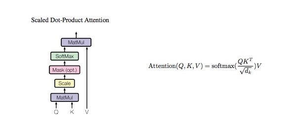

Transformers
Contents
Transformers#
import torch
import pickle
import numpy as np
import torch.nn as nn
with open('Data/HCP_movie_watching.pkl','rb') as f:
TS = pickle.load(f)
print(TS.keys())
dict_keys(['testretest', 'twomen', 'bridgeville', 'pockets', 'overcome', 'inception', 'socialnet', 'oceans', 'flower', 'hotel', 'garden', 'dreary', 'homealone', 'brokovich', 'starwars'])
rel = {}
l = 0
for movie_name, ts in TS.items():
rel[movie_name] = l
l += 1
print(movie_name, ts.shape)
testretest (4, 176, 84, 300)
twomen (176, 245, 300)
bridgeville (176, 222, 300)
pockets (176, 189, 300)
overcome (176, 65, 300)
inception (176, 227, 300)
socialnet (176, 260, 300)
oceans (176, 250, 300)
flower (176, 181, 300)
hotel (176, 186, 300)
garden (176, 205, 300)
dreary (176, 143, 300)
homealone (176, 233, 300)
brokovich (176, 231, 300)
starwars (176, 256, 300)
train_feature = []
test_feature = []
train_target = []
test_target = []
seq_length = 198
for movie_name, ts in TS.items():
pep = 0
if movie_name != "testretest":
for i in ts:
pep += 1
if (pep <= 100):
if i.shape[0]>seq_length:
k = i[:seq_length][:]
train_feature.append(k)
train_target.append(rel[movie_name])
k = i[i.shape[0]-seq_length:][:]
train_feature.append(k)
train_target.append(rel[movie_name])
elif i.shape[0]<seq_length:
k = [[0]*300]*seq_length
k[seq_length-i.shape[0]:] = i
train_feature.append(k)
train_target.append(rel[movie_name])
else:
train_feature.append(i)
train_target.append(rel[movie_name])
else:
if i.shape[0]>seq_length:
k = i[:seq_length][:]
test_feature.append(k)
test_target.append(rel[movie_name])
k = i[i.shape[0]-seq_length:][:]
test_feature.append(k)
test_target.append(rel[movie_name])
elif i.shape[0]<seq_length:
k = [[0]*300]*seq_length
k[seq_length-i.shape[0]:] = i
test_feature.append(k)
test_target.append(rel[movie_name])
else:
test_feature.append(i)
test_target.append(rel[movie_name])
print(pep)
else:
for jj in ts:
pep = 0
for i in jj:
pep += 1
if (pep <= 101):
if i.shape[0]>seq_length:
k = i[:seq_length][:]
train_feature.append(k)
train_target.append(rel[movie_name])
k = i[i.shape[0]-seq_length:][:]
train_feature.append(k)
train_target.append(rel[movie_name])
elif i.shape[0]<seq_length:
k = [[0]*300]*seq_length
k[seq_length-i.shape[0]:] = i
train_feature.append(k)
train_target.append(rel[movie_name])
else:
train_feature.append(i)
train_target.append(rel[movie_name])
else:
if i.shape[0]>seq_length:
k = i[:seq_length][:]
test_feature.append(k)
test_target.append(rel[movie_name])
k = i[i.shape[0]-seq_length:][:]
test_feature.append(k)
test_target.append(rel[movie_name])
elif i.shape[0]<seq_length:
k = [[0]*300]*seq_length
k[seq_length-i.shape[0]:] = i
test_feature.append(k)
test_target.append(rel[movie_name])
else:
test_feature.append(i)
test_target.append(rel[movie_name])
print(pep)
176
176
176
176
176
176
176
176
176
176
176
176
176
176
176
176
176
176
from torch.utils.data import TensorDataset, DataLoader
train_data = TensorDataset(torch.from_numpy(np.array(train_feature)).float(),torch.from_numpy(np.array(train_target)).float())
test_data = TensorDataset(torch.from_numpy(np.array(test_feature)).float(),torch.from_numpy(np.array(test_target)).float())
from torch.utils.data.sampler import SubsetRandomSampler
batch_size = 32
valid_data = 0.25
t_train = len(train_data)
data_no = list(range(t_train))
np.random.shuffle(data_no)
split_no = int(np.ceil(valid_data*t_train))
train,valid = data_no[split_no:],data_no[:split_no]
train_sampler = SubsetRandomSampler(train)
valid_sampler = SubsetRandomSampler(valid)
train_loader = DataLoader(train_data,batch_size=batch_size,sampler=train_sampler,drop_last=True)
valid_loader = DataLoader(train_data,sampler=valid_sampler,batch_size=batch_size,drop_last=True)
test_loader = DataLoader(test_data, batch_size=batch_size,shuffle = True)
is_cuda = torch.cuda.is_available()
if is_cuda:
device = torch.device("cuda")
else:
device = torch.device("cpu")
device
device(type='cuda')
MODELS#
Attention#
class Attention(nn.Module):
"""
q : current sequence
k : every sequence to check relationship with Qeury
v : every seq same with Key
"""
def __init__(self):
super(Attention, self).__init__()
self.softmax = nn.Softmax(dim=-1)
def forward(self, q, k, v): #, mask=None, e=1e-12):
# [batch_size, head, length, d_tensor]
batch_size, head, length, d_tensor = k.size()
# 1. dot product Query with Key^T to compute similarity
k_t = k.transpose(2, 3)
score = (q @ k_t) / np.sqrt(d_tensor) # scaled dot product
# 2. apply masking (opt)
#if mask is not None:
# score = score.masked_fill(mask == 0, -e)
# 3. pass them softmax to make [0, 1] range
score = self.softmax(score)
# 4. multiply with Value
v = score @ v
return v, score
Multi Head Attention#

class MultiHeadAttention(nn.Module):
def __init__(self, d_model, n_head):
super(MultiHeadAttention, self).__init__()
self.n_head = n_head
self.attention = Attention()
self.w_q = nn.Linear(d_model, d_model)
self.w_k = nn.Linear(d_model, d_model)
self.w_v = nn.Linear(d_model, d_model)
self.w_concat = nn.Linear(d_model, d_model)
def forward(self, q, k, v):
# 1. dot product with weight matrices
q, k, v = self.w_q(q), self.w_k(k), self.w_v(v)
# 2. split tensor by number of heads
q, k, v = self.split(q), self.split(k), self.split(v)
# 3. do scale dot product to compute similarity
out, attention = self.attention(q, k, v)#, mask=mask)
# 4. concat and pass to linear layer
out = self.concat(out)
out = self.w_concat(out)
# 5. visualize attention map
# TODO : we should implement visualization
return out
def split(self, tensor):
"""
split tensor by number of head
:param tensor: [batch_size, length, d_model]
:return: [batch_size, head, length, d_tensor]
"""
batch_size, length, d_model = tensor.size()
d_tensor = d_model // self.n_head
tensor = tensor.view(batch_size, length, self.n_head, d_tensor).transpose(1, 2)
# it is similar with group convolution (split by number of heads)
return tensor
def concat(self, tensor):
"""
:param tensor: [batch_size, head, length, d_tensor]
:return: [batch_size, length, d_model]
"""
batch_size, head, length, d_tensor = tensor.size()
d_model = head * d_tensor
tensor = tensor.transpose(1, 2).contiguous().view(batch_size, length, d_model)
return tensor
Feed Forward#
class FeedForward(nn.Module):
def __init__(self, d_model, hidden_dim, dropout = 0.1):
super().__init__()
self.l1 = nn.Linear(d_model, hidden_dim)
self.l2 = nn.Linear(hidden_dim, d_model)
self.dropout = nn.Dropout(p=dropout)
self.relu = nn.ReLU()
def forward(self, x):
x = self.dropout(self.relu(self.l1(x)))
x = self.l2(x)
return x
Complied Model#
class Transformer_Model(nn.Module):
def __init__(self, d_model, hidden_dim, out_dim,n_head, drop_prob):
super(Transformer_Model, self).__init__()
self.attention = MultiHeadAttention(d_model=d_model, n_head=n_head)
#self.norm1 = LayerNorm(d_model=d_model)
self.norm1 = torch.nn.LayerNorm(d_model)
self.dropout1 = nn.Dropout(p=drop_prob)
self.feed_fwd = FeedForward(d_model=d_model, hidden_dim=hidden_dim, dropout=drop_prob)
self.norm2 = torch.nn.LayerNorm(d_model) #LayerNorm(d_model=d_model)
self.dropout2 = nn.Dropout(p=drop_prob)
self.linear_out = nn.Linear(d_model,out_dim)
self.func = nn.Softmax(dim=-1)
def forward(self, x):
# 1. compute self attention
_x = x
#print(x.shape)
x = self.attention(q=x, k=x, v=x)
# 2. add and norm
x = self.norm1(x + _x)
x = self.dropout1(x)
# 3. feed forward network
_x = x
x = self.feed_fwd(x)
# 4. add and norm
x = self.norm2(x + _x)
x = self.dropout2(x)
# 5. Output
x = self.func(self.linear_out(x))
return x
Training#
def train(epochs,train_loader,net,valid_loader,optimzer,criterion,att=True):
val_acc = []
tr_acc = []
clip = 3 # gradient clipping
net.to(device)
net.train()
valid_loss_min = np.Inf
valid_losses = []
train_losses = []
for e in range(epochs):
num_correct = 0
train_loss = []
valid_loss = []
train_acc = 0.0
valid_acc = 0.0
counter = 0
for inputs, labels in train_loader:
inputs, labels = inputs.to(device), labels.type(torch.LongTensor).to(device)
net.zero_grad()
output = net(inputs)[:, -1, :]
#print(output[:, -1, :].shape)
pred = torch.round(output.squeeze())
top_value, top_index = torch.max(pred,1)
correct_tensor = top_index.eq(labels.float().view_as(top_index))
correct = np.squeeze(correct_tensor.to('cpu').numpy())
num_correct += np.sum(correct)
loss = criterion(output, labels)
loss.backward()
nn.utils.clip_grad_norm_(net.parameters(), clip)
optimizer.step()
train_loss.append(loss.item())
tr_acc.append(num_correct/((len(train_loader)-1)*batch_size))
acc = 0.0
val_losses = []
net.eval()
num_correct = 0
v_c = 0
for inputs, labels in valid_loader:
inputs, labels = inputs.to(device), labels.type(torch.LongTensor).to(device)
output= net(inputs)[:, -1, :]
pred = torch.round(output.squeeze())
top_value, top_index = torch.max(pred,1)
correct_tensor = top_index.eq(labels.float().view_as(top_index))
correct = np.squeeze(correct_tensor.to('cpu').numpy())
num_correct += np.sum(correct)
val_loss = criterion(output.squeeze(),labels)
val_losses.append(val_loss.item())
if val_loss.item() <= valid_loss_min:
print('Validation loss decreased ({:.6f} --> {:.6f}). Saving model ...'.format(valid_loss_min, val_loss.item()))
best_epoch = e
if att:
torch.save(net.state_dict(), 'Trns_Multi_Att.pt')
else:
torch.save(net.state_dict(), 'Trns_Att.pt')
valid_loss_min = val_loss.item()
net.train()
valid_losses.append(np.mean(val_losses))
train_losses.append(np.mean(train_loss))
val_acc.append(num_correct/(len(valid_loader)*batch_size))
print('Epoch: {}/{} \tTraining Loss: {:.6f} \tValidation Loss: {:.6f}'.format(e+1,epochs,np.mean(train_loss),np.mean(val_losses)))
return train_losses,valid_losses,tr_acc,val_acc,best_epoch
epochs = 100
d_model = 300
feed_fwd = 300
output_dim = 15
n_head = 4
drop_prob = 0.0006
lr = 0.001
model = Transformer_Model(d_model, feed_fwd, output_dim,n_head, drop_prob)
optimizer = torch.optim.Adam(model.parameters(), lr=lr)
criterion = nn.CrossEntropyLoss()
model
Transformer_Model(
(attention): MultiHeadAttention(
(attention): Attention(
(softmax): Softmax(dim=-1)
)
(w_q): Linear(in_features=300, out_features=300, bias=True)
(w_k): Linear(in_features=300, out_features=300, bias=True)
(w_v): Linear(in_features=300, out_features=300, bias=True)
(w_concat): Linear(in_features=300, out_features=300, bias=True)
)
(norm1): LayerNorm((300,), eps=1e-05, elementwise_affine=True)
(dropout1): Dropout(p=0.0006, inplace=False)
(feed_fwd): FeedForward(
(l1): Linear(in_features=300, out_features=300, bias=True)
(l2): Linear(in_features=300, out_features=300, bias=True)
(dropout): Dropout(p=0.0006, inplace=False)
(relu): ReLU()
)
(norm2): LayerNorm((300,), eps=1e-05, elementwise_affine=True)
(dropout2): Dropout(p=0.0006, inplace=False)
(linear_out): Linear(in_features=300, out_features=15, bias=True)
(func): Softmax(dim=-1)
)
train_losses,valid_losses,tr_acc,val_acc,best_epoch = train(epochs,train_loader,model,valid_loader,optimizer,criterion)
Validation loss decreased (inf --> 2.369197). Saving model ...
Validation loss decreased (2.369197 --> 2.287691). Saving model ...
Validation loss decreased (2.287691 --> 2.242522). Saving model ...
Validation loss decreased (2.242522 --> 2.219682). Saving model ...
Validation loss decreased (2.219682 --> 2.195934). Saving model ...
Epoch: 1/100 Training Loss: 2.496149 Validation Loss: 2.368553
Validation loss decreased (2.195934 --> 2.126452). Saving model ...
Validation loss decreased (2.126452 --> 2.126295). Saving model ...
Validation loss decreased (2.126295 --> 2.125395). Saving model ...
Validation loss decreased (2.125395 --> 2.108857). Saving model ...
Epoch: 2/100 Training Loss: 2.245956 Validation Loss: 2.207429
Validation loss decreased (2.108857 --> 2.011914). Saving model ...
Epoch: 3/100 Training Loss: 2.105917 Validation Loss: 2.141412
Validation loss decreased (2.011914 --> 1.989511). Saving model ...
Epoch: 4/100 Training Loss: 2.026542 Validation Loss: 2.092522
Validation loss decreased (1.989511 --> 1.967464). Saving model ...
Epoch: 5/100 Training Loss: 1.988565 Validation Loss: 2.111349
Validation loss decreased (1.967464 --> 1.953470). Saving model ...
Validation loss decreased (1.953470 --> 1.950491). Saving model ...
Validation loss decreased (1.950491 --> 1.943271). Saving model ...
Epoch: 6/100 Training Loss: 1.944625 Validation Loss: 2.052028
Validation loss decreased (1.943271 --> 1.930834). Saving model ...
Epoch: 7/100 Training Loss: 1.924850 Validation Loss: 2.045434
Epoch: 8/100 Training Loss: 1.910712 Validation Loss: 2.038442
Validation loss decreased (1.930834 --> 1.914460). Saving model ...
Epoch: 9/100 Training Loss: 1.907772 Validation Loss: 2.024285
Epoch: 10/100 Training Loss: 1.895903 Validation Loss: 2.067150
Validation loss decreased (1.914460 --> 1.914453). Saving model ...
Epoch: 11/100 Training Loss: 1.897827 Validation Loss: 2.037685
Validation loss decreased (1.914453 --> 1.886676). Saving model ...
Epoch: 12/100 Training Loss: 1.905391 Validation Loss: 2.019796
Epoch: 13/100 Training Loss: 1.897869 Validation Loss: 2.042009
Epoch: 14/100 Training Loss: 1.917330 Validation Loss: 2.069697
Epoch: 15/100 Training Loss: 1.901373 Validation Loss: 2.048057
Epoch: 16/100 Training Loss: 1.931683 Validation Loss: 2.079506
Epoch: 17/100 Training Loss: 1.903681 Validation Loss: 2.041736
Epoch: 18/100 Training Loss: 1.905285 Validation Loss: 2.064928
Epoch: 19/100 Training Loss: 1.890572 Validation Loss: 2.042564
Epoch: 20/100 Training Loss: 1.891540 Validation Loss: 2.040011
Epoch: 21/100 Training Loss: 1.886099 Validation Loss: 2.001538
Epoch: 22/100 Training Loss: 1.892662 Validation Loss: 2.043360
Epoch: 23/100 Training Loss: 1.874153 Validation Loss: 2.020605
Epoch: 24/100 Training Loss: 1.887284 Validation Loss: 2.037731
Epoch: 25/100 Training Loss: 1.913565 Validation Loss: 2.061414
Epoch: 26/100 Training Loss: 1.895424 Validation Loss: 2.036212
Epoch: 27/100 Training Loss: 1.893901 Validation Loss: 2.034571
Validation loss decreased (1.886676 --> 1.861252). Saving model ...
Epoch: 28/100 Training Loss: 1.892401 Validation Loss: 2.025984
Epoch: 29/100 Training Loss: 1.881659 Validation Loss: 2.034249
Epoch: 30/100 Training Loss: 1.887723 Validation Loss: 2.032261
Epoch: 31/100 Training Loss: 1.877464 Validation Loss: 2.030828
Epoch: 32/100 Training Loss: 1.873735 Validation Loss: 2.053210
Epoch: 33/100 Training Loss: 1.892769 Validation Loss: 2.062317
Epoch: 34/100 Training Loss: 1.926907 Validation Loss: 2.099619
Epoch: 35/100 Training Loss: 1.913388 Validation Loss: 2.057637
Epoch: 36/100 Training Loss: 1.896660 Validation Loss: 2.050619
Epoch: 37/100 Training Loss: 1.885099 Validation Loss: 2.043317
Epoch: 38/100 Training Loss: 1.910708 Validation Loss: 2.063756
Epoch: 39/100 Training Loss: 1.892284 Validation Loss: 2.031129
Epoch: 40/100 Training Loss: 1.894769 Validation Loss: 2.072907
Epoch: 41/100 Training Loss: 1.916711 Validation Loss: 2.111646
Epoch: 42/100 Training Loss: 1.907748 Validation Loss: 2.075157
Epoch: 43/100 Training Loss: 1.902196 Validation Loss: 2.080839
Epoch: 44/100 Training Loss: 1.916238 Validation Loss: 2.070233
Epoch: 45/100 Training Loss: 1.906416 Validation Loss: 2.048658
Epoch: 46/100 Training Loss: 1.886834 Validation Loss: 2.046270
Epoch: 47/100 Training Loss: 1.896286 Validation Loss: 2.053460
Epoch: 48/100 Training Loss: 1.926351 Validation Loss: 2.147960
Epoch: 49/100 Training Loss: 1.916224 Validation Loss: 2.073058
Epoch: 50/100 Training Loss: 1.908418 Validation Loss: 2.102307
Epoch: 51/100 Training Loss: 1.909428 Validation Loss: 2.060141
Epoch: 52/100 Training Loss: 1.880711 Validation Loss: 2.065563
Epoch: 53/100 Training Loss: 1.897750 Validation Loss: 2.060467
Epoch: 54/100 Training Loss: 1.881901 Validation Loss: 2.045987
Epoch: 55/100 Training Loss: 1.892131 Validation Loss: 2.038171
Epoch: 56/100 Training Loss: 1.889707 Validation Loss: 2.076825
Epoch: 57/100 Training Loss: 1.884063 Validation Loss: 2.069893
Epoch: 58/100 Training Loss: 1.908220 Validation Loss: 2.101316
Epoch: 59/100 Training Loss: 1.920847 Validation Loss: 2.072747
Epoch: 60/100 Training Loss: 1.887903 Validation Loss: 2.060806
Epoch: 61/100 Training Loss: 1.894624 Validation Loss: 2.060311
Epoch: 62/100 Training Loss: 1.897483 Validation Loss: 2.078270
Epoch: 63/100 Training Loss: 1.892086 Validation Loss: 2.062245
Epoch: 64/100 Training Loss: 1.901208 Validation Loss: 2.082479
Epoch: 65/100 Training Loss: 1.917534 Validation Loss: 2.073211
Epoch: 66/100 Training Loss: 1.913353 Validation Loss: 2.108092
Epoch: 67/100 Training Loss: 1.915821 Validation Loss: 2.083698
Epoch: 68/100 Training Loss: 1.902871 Validation Loss: 2.083377
Epoch: 69/100 Training Loss: 1.899564 Validation Loss: 2.066452
Epoch: 70/100 Training Loss: 1.900696 Validation Loss: 2.066603
Epoch: 71/100 Training Loss: 1.900814 Validation Loss: 2.076062
Epoch: 72/100 Training Loss: 1.909731 Validation Loss: 2.064871
Epoch: 73/100 Training Loss: 1.910897 Validation Loss: 2.080498
Epoch: 74/100 Training Loss: 1.910500 Validation Loss: 2.103350
Epoch: 75/100 Training Loss: 1.930773 Validation Loss: 2.107001
Epoch: 76/100 Training Loss: 1.900320 Validation Loss: 2.089695
Epoch: 77/100 Training Loss: 1.914021 Validation Loss: 2.110425
Epoch: 78/100 Training Loss: 1.903375 Validation Loss: 2.073662
Epoch: 79/100 Training Loss: 1.904926 Validation Loss: 2.083741
Epoch: 80/100 Training Loss: 1.899218 Validation Loss: 2.074880
Epoch: 81/100 Training Loss: 1.893317 Validation Loss: 2.086401
Epoch: 82/100 Training Loss: 1.890393 Validation Loss: 2.053685
Epoch: 83/100 Training Loss: 1.882573 Validation Loss: 2.084704
Epoch: 84/100 Training Loss: 1.888510 Validation Loss: 2.051252
Epoch: 85/100 Training Loss: 1.890915 Validation Loss: 2.089351
Epoch: 86/100 Training Loss: 1.890093 Validation Loss: 2.027609
Epoch: 87/100 Training Loss: 1.883667 Validation Loss: 2.055984
Epoch: 88/100 Training Loss: 1.884753 Validation Loss: 2.065890
Epoch: 89/100 Training Loss: 1.900987 Validation Loss: 2.082033
Epoch: 90/100 Training Loss: 1.909990 Validation Loss: 2.089382
Epoch: 91/100 Training Loss: 1.918731 Validation Loss: 2.092185
Epoch: 92/100 Training Loss: 1.918806 Validation Loss: 2.113726
Epoch: 93/100 Training Loss: 1.929916 Validation Loss: 2.084742
Epoch: 94/100 Training Loss: 1.916393 Validation Loss: 2.089705
Epoch: 95/100 Training Loss: 1.916843 Validation Loss: 2.088426
Validation loss decreased (1.861252 --> 1.855618). Saving model ...
Epoch: 96/100 Training Loss: 1.906951 Validation Loss: 2.084724
Epoch: 97/100 Training Loss: 1.907536 Validation Loss: 2.090133
Epoch: 98/100 Training Loss: 1.898621 Validation Loss: 2.082749
Epoch: 99/100 Training Loss: 1.891242 Validation Loss: 2.079129
Epoch: 100/100 Training Loss: 1.912307 Validation Loss: 2.096053
import matplotlib.pyplot as plt
x = [i for i in range(1,epochs+1)]
xi = [i for i in range(0,epochs+5,5)]
xi[0] = 1
f, axis = plt.subplots(2,1)
f.set_figwidth(20)
f.set_figheight(12)
plt.subplots_adjust(top=0.8, wspace=0.2,hspace=0.3)
axis[0].plot(x,train_losses)
axis[0].plot(x,valid_losses)
axis[0].axvline(best_epoch, color='black')
axis[0].set_xticks(xi)
axis[0].set_xlabel("Epochs",fontweight="bold",color = 'Black', fontsize='15', horizontalalignment='center')
axis[0].set_ylabel("Loss",fontweight="bold",color = 'Black', fontsize='15', horizontalalignment='center')
axis[0].set_title("Losses (with Multi-Head Attention)",fontweight='bold',color = 'Black', fontsize='15', horizontalalignment='center')
axis[0].legend(["Training Loss","Valid Loss",f"Best Epoch= {best_epoch}"])
axis[1].plot(x,tr_acc)
axis[1].plot(x,val_acc)
axis[1].set_xticks(xi)
axis[1].set_xlabel("Epochs", fontweight='bold',color = 'Black', fontsize='15', horizontalalignment='center')
axis[1].set_ylabel("Accuracy",fontweight='bold',color = 'Black', fontsize='15', horizontalalignment='center')
axis[1].set_title("Accuracies (with Multi-Head Attention)",fontweight='bold',color = 'Black', fontsize='15', horizontalalignment='center')
axis[1].legend(["Training Accuracy","Valid Accuracy"]);

Testing#
def test(test_loader,net):
net.to(device)
net.eval()
num_correct = 0
valid_acc = 0
for inputs, labels in test_loader:
inputs, labels = inputs.to(device), labels.type(torch.LongTensor).to(device)
output = net(inputs)[:,-1,:]
pred = torch.round(output.squeeze())
top_value, top_index = torch.max(pred,1)
correct_tensor = top_index.eq(labels.float().view_as(top_index))
correct = np.squeeze(correct_tensor.to('cpu').numpy())
num_correct += np.sum(correct)
test_acc = num_correct/((len(test_loader)-1)*batch_size)
print("Test accuracy: {:.3f} %".format(test_acc*100))
model = Transformer_Model(d_model, feed_fwd, output_dim,n_head, drop_prob)
model.load_state_dict(torch.load('Trns_Multi_Att.pt'))
<All keys matched successfully>
test(test_loader,model)
Test accuracy: 80.407 %